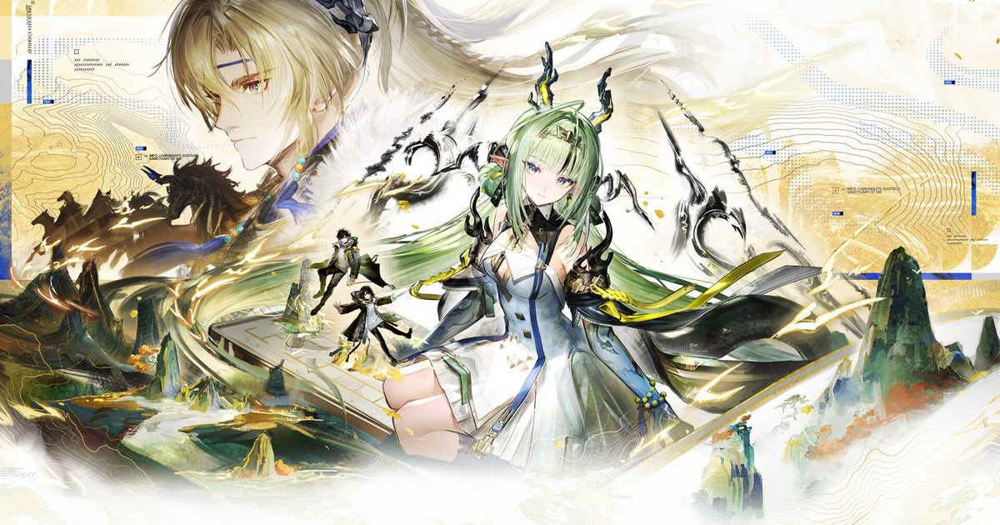

2026-11-18 · 行业深读

北京时间 11 月 18 日凌晨，TGA 2026 的入围名单一次性放了出来。中文圈刷屏的是两件事： GTA 6 拿了八项提名，以及《影之刃零》五项提名挤进年度游戏。 夹在中间的「最佳移动游戏」被大多数人一眼扫过，只有一句「国产占四席」。 但这四个字其实是这份名单里信息量最大的一行——不是因为它证明了中国手游变强了， 而是因为它证明了这个奖项已经不再评「手游」。
《明日方舟：终末地》（Hypergryph / GRYPHLINE）：1 月 22 日全球上线， iOS / Android / PC / PS5 同步；Steam 版反而拖到 10 月 14 日才单独上架。 这个排期顺序很说明问题——手机和主机先走，PC 的 Steam 渠道后补。
《异环》（Hotta Studio / 完美世界）：4 月 29 日上线，PC、PS5、手机、Mac 全端。 《燕云十六声》（Everstone / 网易）：端游 2025 年 11 月 14 日、手游 12 月 12 日， 今年 11 月 13 日刚过完一周年更新。《怪物猎人：旅人》（天美工作室群 / Level Infinite）： 10 月 29 日上线，是本届五席里最年轻的一款。
唯一的非国产是《宝可梦冠军》（The Pokémon Works，宝可梦公司与 ILCA 合资公司的首部作品）： 4 月 8 日 Switch 版、6 月 17 日手机版，两个平台跨端对战。 更关键的一句是——它已经取代正传，成为 2026 年 VGC 各级官方赛事的比赛平台。 也就是说，这一年宝可梦电竞的世界冠军，是在一款「手机上也能打」的游戏里决出来的。
把这五条时间轴并排放在一张纸上，你会发现它们几乎没有共同点：一个是工厂生产线加战术 RPG， 一个是都市怪谈开放世界，一个是武侠 MMORPG，一个是狩猎动作，一个是纯对战。 唯一的共同点是——它们全都能在手机上运行，而手机都不是它们的主场。
第一，奖项定义本身就很宽。TGA 对这个类别的定义是「最适合在移动设备上游玩的作品」， 从头到尾没有写过「移动端独占」。定义没有变过，是产业把定义填满了。 当一款游戏的手机版和 PS5 版共用同一份存档、同一套抽卡经济、同一个版本号时， 它到底算不算「移动游戏」，这个问题在 2026 年已经没有标准答案了。
第二，评审团写得出一道题，才投得出一票。 提名由一百六十多家媒体与创作者机构各交一份五票名单产生。对一家游戏媒体来说， 跨端作品意味着它能在 PC 上截 4K 图、能跑帧数测试、能拉出完整的长文评测； 而一款纯手机游戏，很难被写成一篇「值得被引用」的文章。 这不是偏见，是工作流的必然结果——能被评测的作品，才会被提名。
第三，中国厂商已经不再把手机当成「降级版本」。 这是我在这一届名单里看到最实质的变化。《终末地》把整套工厂生产链做进了战斗循环， 《异环》在都市里塞了载具改装和房产系统，《燕云》让端手共用一套大世界。 它们不是「先做主机版再缩水」，而是「一套内容，三种屏幕」。这种工程能力， 五年前在国产手游里基本见不到。
单独看一年没有意义，把十二届获奖者排成一条线就清楚了。 2014 炉石、2015 劳拉 GO、2016 宝可梦 GO、2017 纪念碑谷 2、2018 Florence—— 那是「手机原生设计」的黄金期，评的是触屏交互、单手操作、碎片时间，作品体量普遍很小。
2019 年是个拐点：《使命召唤手游》拿奖，开发方是天美。 这是第一次由 3A IP 的移动版摘下这个奖，也是「大厂 IP + 移动化」这条路径第一次被官方认证。 七年之后，天美带着卡普空的《怪物猎人》IP 又回到了同一张名单上—— 同一家公司、同一种方法论，只是这次不再新鲜。
2021 原神、2023 星穹铁道、2025 赛马娘，跨端服务型游戏基本接管了这个类别。 中间只有 2024 年的《小丑牌》是一次反例：单人开发、体量极小、纯靠设计赢。 那一年五席里还有《宝可梦 TCG Pocket》和《AFK Journey》，整体体量明显比今年轻一档。 两年之内，这个类别的「体量门槛」翻了不止一倍。
所以 2026 年的四席国产，严格说不是「中国厂商突然变强」，而是这个奖的评选口味 刚好和中国厂商过去五年押注的方向重合了：大世界、跨端、长线运营、工业化产能。 风向对了，船自然就多。
我们的观察：五席里三款是大世界（终末地、异环、燕云），两款是对战或狩猎（宝可梦冠军、旅人）。 陀螺仪、单手操作、竖屏、五分钟一局——这些真正属于「移动」的设计语言， 在这张名单上一项都看不到。评审团评的其实是「年度最有野心的移动端工程」， 而不是「最懂手机的游戏」。两件事都值得奖，但它们不是同一件事。
我们的观点：这个类别该拆了。要么改名成「最佳跨端服务型游戏」， 要么分成「移动原生」与「跨端服务」两组，各给一座奖。 现在的问题是它同时在奖励两种完全不同的能力，而普通玩家拿它当「手机游戏购买指南」， 点进商店一看——十几 G 的安装包、要挂加速器、要组队，只会觉得被骗。 一个奖项最怕的不是评选不公，是它的名字和内容对不上。
我们的案例对比：2024 与 2026 两届名单摆在一起最直观。 2024 五席（小丑牌、宝可梦 TCG Pocket、AFK Journey、鸣潮、绝区零）里， 至少三款能在地铁上单手打完一局；2026 五席里，只有《宝可梦冠军》做到了这一点。 同一座奖、同一个评审机制、隔了两年，答案从「轻」跳到「重」， 说明这个类别的标准从来不是稳定的审美，而是产业的产能曲线。
我们的实验：给自己定一个很土的标准——「早高峰地铁，单手，十分钟」。 按这个标准重排五款：宝可梦冠军 > 怪物猎人：旅人 > 终末地 > 燕云 > 异环。 《异环》的问题不在质量，而在它的都市驾驶、房产、街头探索全都需要大屏幕和整块时间， 手机端更像是「通勤时收菜」的入口。这不是缺点，但它确实不是「移动游戏」这个词的原意。
我们的评分理由：8.1 分评的是「这张名单的含金量与类型多样性」，不是评某一款游戏。 加分项：五款覆盖五种完全不同的玩法，没有一款是靠 IP 硬凑的凑数名额； 《终末地》的工厂系统、《异环》的都市自由度、《旅人》把狩猎动作压缩到触屏， 各自都解决了实际的设计难题；四席国产这件事，客观上说明评审团的视野已经不再以欧美主机为中心。 扣分项：类别定义与内容脱节，纯移动端的作品在这个机制下几乎没有出头机会； 五款里三款是同一种「大世界 + 抽卡」的骨架，多样性是表面上的。 一句话总结：这不是「国产手游的胜利」，是「手游」这个概念被自己的成功撑破了。
投票已在官方站点开放，截止 12 月 9 日 18:00 太平洋时间；颁奖礼 12 月 10 日在洛杉矶 Peacock Theater 举行， 国内可通过 Bilibili 通道参与。如果你只是想找一款能在地铁上打发时间的游戏， 这张名单帮不上什么忙——它评的是野心，不是便携。